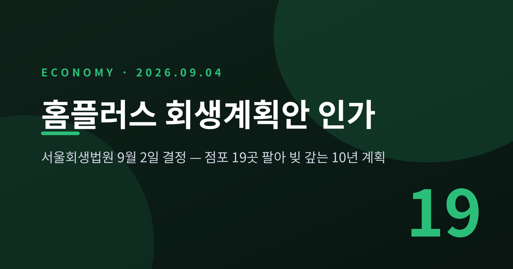
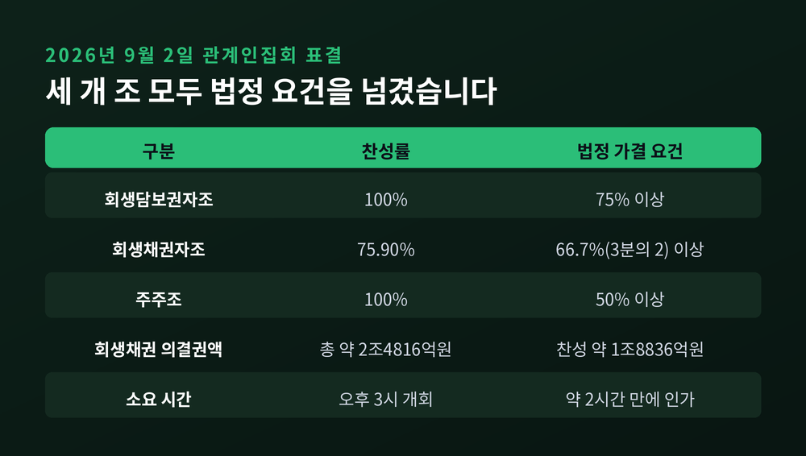
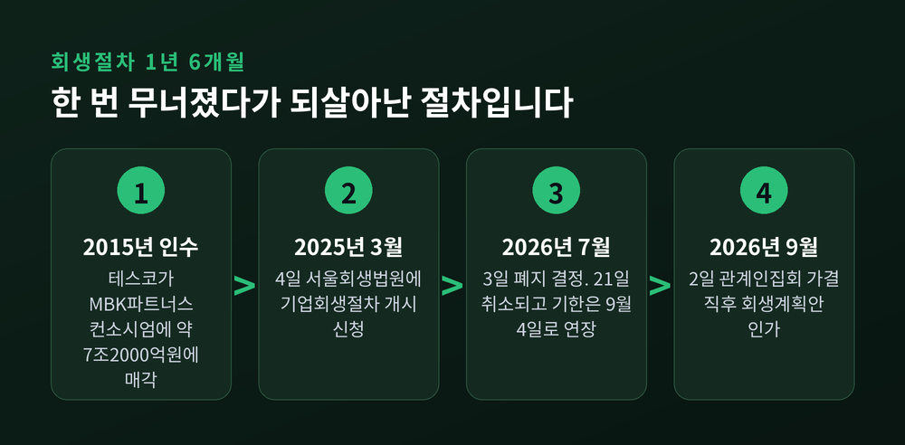
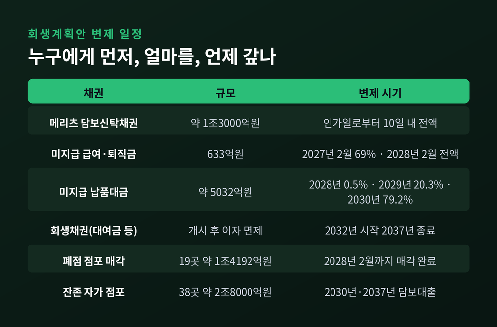
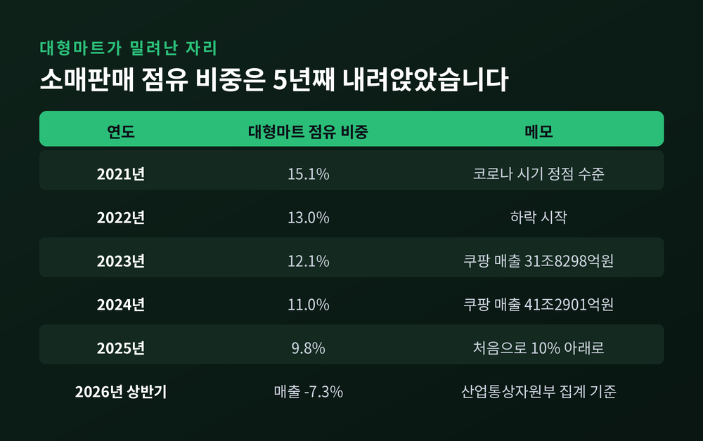
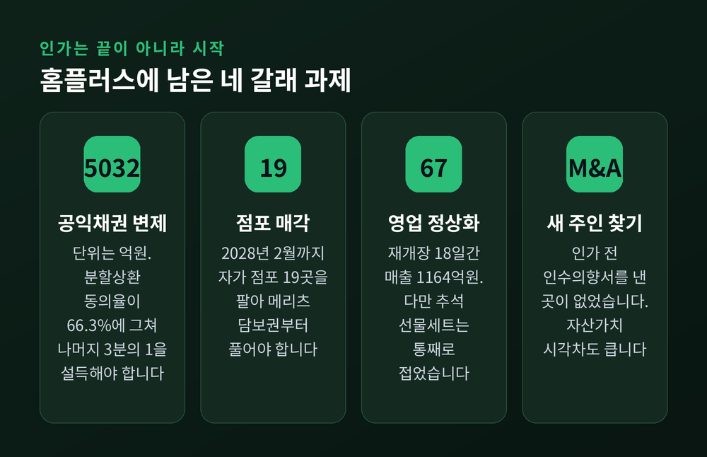

이번 글에서는 2026년 9월 2일 서울회생법원이 내린 홈플러스 회생계획안 인가 결정을 정리해 보겠습니다. 표결이 어떻게 갈렸는지, 계획안에 담긴 변제 구조가 무엇인지, 그리고 협력업체와 근로자에게 어떤 일이 남았는지를 차례로 짚어보려 합니다.

서울회생법원 회생4부가 홈플러스 회생계획안을 인가했습니다. 재판장은 정준영 법원장입니다.
이날 오후 3시 관계인집회가 열렸습니다. 채권단 표결이 끝나자 재판부는 가결을 선포하고 곧바로 인가 결정을 내렸습니다. 집회 시작부터 인가까지 걸린 시간은 약 두 시간이었습니다.
표결 결과는 이렇습니다. 회생담보권자조 100퍼센트, 회생채권자조 75.90퍼센트, 주주조 100퍼센트가 찬성했습니다.
법이 정한 가결 요건은 회생담보권자조 75퍼센트, 회생채권자조 3분의 2, 주주조 50퍼센트 이상입니다. 세 개 조 모두 요건을 넘겼습니다.
가장 관심이 쏠린 곳은 회생채권자조였습니다. 총 의결권액 약 2조4816억원 가운데 약 1조8836억원이 찬성표를 던졌습니다. 요건인 66.7퍼센트를 9퍼센트포인트가량 웃도는 수치입니다.
인가 결정은 즉시 효력이 생깁니다. 계획안에 적힌 변제를 차질 없이 수행하면 회생절차는 그대로 종료됩니다.

여기까지 오는 길은 순탄하지 않았습니다.
홈플러스가 서울회생법원에 회생절차 개시를 신청한 것은 2025년 3월 4일입니다. 인가까지 약 1년 6개월이 걸린 셈입니다.
중간에 절차가 끊긴 적도 있습니다. 2026년 7월 3일 같은 재판부가 회생절차 폐지를 결정했습니다. 회생계획을 이행할 최소 운영자금 2000억원을 확보하지 못했다는 이유였습니다. 사실상 청산 수순이었습니다.
반전은 18일 만에 왔습니다. 최대 채권자인 메리츠금융그룹이 2000억원 규모 긴급운영자금 대출을 의결했고, 회사가 즉시항고에 나섰습니다. 법원은 7월 21일 폐지 결정을 취소하고 가결 기한을 9월 4일까지 늘려줬습니다.
이번 인가는 그 기한을 이틀 앞둔 결정입니다. 여유가 있어서 내린 결정이 아니라, 마지막 문턱에서 간신히 통과한 결정에 가깝습니다.

회생계획안의 뼈대는 부동산입니다.
폐점이 확정된 점포는 37개입니다. 이 가운데 홈플러스가 직접 소유한 자가 점포 19곳을 2028년 2월까지 팔기로 했습니다. 회사는 이 매각으로 약 1조4192억원을 마련할 수 있다고 봅니다.
매각대금은 메리츠금융그룹 앞으로 설정된 1조3000억원 규모 선순위 담보권신탁채권을 갚는 데 먼저 쓰입니다.
순서가 이렇게 정해진 데는 이유가 있습니다. 홈플러스의 자가 점포 62개가 메리츠에 신탁 담보로 묶여 있습니다. 이 담보권이 풀려야 남은 점포를 담보로 새 자금을 빌릴 수 있습니다. 첫 단추를 끼우지 못하면 그다음 단추도 채울 수 없는 구조인 것입니다.
두 번째 단계는 담보대출입니다. 영업을 이어가는 자가 점포 38곳을 담보로 2030년 2월과 2037년 2월 두 차례 대출을 받아 남은 채권을 갚습니다. 회사가 밝힌 38개 점포의 감정평가액은 약 2조8000억원입니다.
채권별 일정도 정해졌습니다. 메리츠 담보신탁채권은 인가일로부터 10일 안에 원금과 개시 전 이자를 전액 갚아야 합니다. 이달 중순이 첫 시험대인 셈입니다.
전현직 직원에게 밀린 급여와 퇴직금 633억원은 2027년 2월까지 69퍼센트, 2028년 2월까지 전액 지급합니다.
납품대금은 다릅니다. 5032억원 규모 미지급 납품대금은 2028년 2월에 0.5퍼센트, 2029년 2월에 20.3퍼센트, 2030년 2월에 79.2퍼센트로 나눠 갚습니다. 첫해 변제율이 0.5퍼센트라는 점이 논란의 핵심이었습니다.
대여금과 카드채권 같은 회생채권은 더 멉니다. 원금과 개시 전 이자를 제5차연도부터 제10차연도까지 나눠 갚고, 개시 후 이자는 면제합니다. 실질 변제는 2032년에 시작해 2037년에 끝납니다.

이 결정이 중요한 이유는 걸린 사람의 수 때문입니다.
먼저 협력업체입니다. 납품업체가 받지 못한 5032억원은 공익채권입니다. 회생절차와 무관하게 전액 갚아야 하는 돈이고, 일반 회생채권보다 먼저 받을 권리가 있습니다.
문제는 동의율입니다. 법원은 집회 전날까지 80퍼센트 안팎의 분할상환 동의를 요구한 것으로 전해졌습니다. 8월 31일 기준 동의율은 59퍼센트에 머물렀습니다. 최종 동의율은 66.3퍼센트로 마무리됐고, 법원은 공익채권자 3분의 2 이상이 동의했다는 점을 근거로 인가 요건이 갖춰졌다고 봤습니다.
바꿔 말하면 3분의 1가량은 동의하지 않았습니다. 이들이 일시 변제를 요구하면 유동성 부담이 다시 커집니다. 조사위원인 삼일회계법인도 공익채권자의 분할상환 동의를 전제로 수행 가능성에 무게를 뒀습니다. 전제가 흔들리면 계획도 흔들립니다.
다음은 근로자입니다. 예전엔 2만명이 일하던 회사였습니다. 지금은 희망퇴직 등을 거쳐 9400여명이 남았습니다. 점포도 한때 140개를 넘겼지만 지금은 67개입니다.
2026년 5월 37개점 폐점이 확정된 뒤 상당수 직원은 일터로 돌아가지 못했습니다. 이들은 기본급의 70퍼센트를 휴업수당으로 받고 있습니다. 유휴 인력은 많게는 4000여명으로 전해집니다. 폐점 대상 점포 근무 인원만 3500명 안팎입니다.
회사는 8월 급여도 아직 지급하지 못한 상태입니다. 인력 효율화 협의가 남아 있고, 그 과정에서 노조와의 마찰은 예고돼 있습니다.
세 번째는 투자자입니다. 물품구매 전자단기사채에 투자했다가 4000억원대 피해를 주장하는 이들은 계획안에 반대했습니다. 3개월짜리 단기 상품이 10년 만기 무이자 채권으로 바뀌었다는 것이 이들의 항변입니다. 이들은 피해자 전용 보호계정 설치와 1차년도 30퍼센트 이상 조기 변제를 요구해왔습니다.
정부도 움직이고 있습니다. 재정경제부는 관계기관 전담반 회의를 열어 인가 결정의 영향과 지원 실적을 점검했습니다. 협력업체를 위해 소진공·중진공 긴급경영안정자금 900억원과 신보·기보 특례보증 3500억원 등 총 4400억원 규모 유동성 지원이 가동 중입니다.
집행 실적도 공개됐습니다. 회생절차 개시 이후 2026년 9월 1일까지 긴급경영안정자금 321건 171억원, 신보·기보 보증 104건 662억원이 나갔습니다. 은행권에서는 만기연장·상환유예 8540건 5조6000억원, 신규 긴급자금 대출 145건 436억원이 집행됐습니다.
배경을 빼놓을 수 없습니다.
2015년 영국 테스코는 홈플러스 지분을 MBK파트너스 컨소시엄에 약 7조2000억원에 넘겼습니다. 국내 인수합병 역사에서 손꼽히는 규모였습니다.
그 뒤 11년의 평가는 냉정합니다. 업계에서는 시장 변화에 대응할 투자보다 재무구조 개선에 무게를 둔 점을 위기의 배경으로 지목합니다.
이번 계획안에 따라 기존 주식은 대가 없이 전량 소각됩니다. MBK가 2015년에 확보한 지분 가치는 사라졌습니다. 김병주 MBK 회장은 메리츠의 2000억원 대출에 전액 연대보증을 섰습니다. 다만 피해자 측은 "보증은 출자가 아니라 조건부 약속"이라며 사재 출연을 요구하고 있습니다.
법적 책임 문제도 진행 중입니다. 서울중앙지검 반부패수사2부가 특정경제범죄가중처벌법상 사기 등 혐의로 김병주 회장과 김광일 부회장 등을 수사하고 있습니다.
관리인인 김광일 MBK파트너스 부회장은 관계인집회에서 회생계획의 핵심을 이렇게 설명했습니다. 흑자 점포 위주로 사업을 줄여 수익성을 확보하고, 일부 점포를 즉시 매각해 채권 변제에 우선 쓴다는 것입니다. 지난 1년 6개월간 적자 점포 19곳을 닫아 임차료와 인건비를 줄였다고도 했습니다. 그는 채권자들에게 사과의 뜻도 밝혔습니다.
시장 환경은 더 무겁습니다. 대형마트가 국내 소매판매에서 차지하는 비중은 2021년 15.1퍼센트에서 해마다 내려앉아 2025년 9.8퍼센트로 처음 10퍼센트 아래로 떨어졌습니다. 오프라인 안에서도 백화점과 편의점에 밀려 3위 채널이 됐습니다.
반대편에서는 쿠팡 매출이 2023년 31조8298억원에서 2024년 41조2901억원으로 1년 만에 10조원가량 늘었습니다. 생활용품 매대는 다이소와 중국 이커머스의 공세에 밀려 계속 줄어왔습니다.
2026년 상반기 대형마트 매출은 산업통상자원부 집계 기준으로 전년 동기 대비 7.3퍼센트 줄었습니다. 홈플러스만의 문제가 아니라 채널 전체의 침체라는 뜻입니다.

앞으로 넘어야 할 고비는 크게 넷입니다.
첫째, 5032억원 공익채권 변제입니다. 분할상환에 동의하지 않은 3분의 1을 설득하는 일이 당장의 숙제입니다.
둘째, 점포 매각입니다. 19개 자가 점포를 2028년 2월까지 팔아 메리츠 채권을 정리해야 다음 단계로 넘어갑니다.
셋째, 영업 회복입니다. 8월 13일 재개장 이후 18일간 67개 점포에서 1164억원의 매출이 나왔습니다. 7월 같은 기간보다 57퍼센트 늘었고, 객수는 38퍼센트, 구매 회원 수는 255퍼센트 증가했습니다. 나쁘지 않은 출발입니다.
다만 한계도 분명합니다. 회생 여파로 상품 대금을 선불로 치러야 해서, 보유 자금 범위 안에서만 물건을 들여올 수 있습니다. 상품 구색이 완전히 돌아오지 않았습니다. 올해 추석 선물세트는 사전예약과 본판매를 모두 접었습니다. 명절 대목을 통째로 비운 셈입니다.
회사는 영업 면적을 1000평 이내로 줄이고 신선식품과 자체상품 중심으로 매장을 다시 짰습니다. 이른바 '트레이더 조' 모델입니다. 2030년 매출 4조3000억원, 영업이익 1628억원이 중장기 목표입니다.
넷째, 새 주인 찾기입니다. 홈플러스는 5월 슈퍼마켓 사업부인 익스프레스를 하림그룹 계열 NS홈쇼핑에 넘긴 뒤 잔존 사업부문을 매물로 내놨습니다. 매각주관사 삼일회계법인이 국내외 유통 기업에 티저레터를 보냈지만, 인가 전 인수의향서를 낸 곳은 없었습니다.
자산가치를 보는 눈도 갈립니다. 홈플러스는 4조8000억원대 부동산을 강조해왔지만, 메리츠 측은 담보로 잡은 62개 점포 가치를 1조5000억원대로 평가한 바 있습니다. 같은 부동산을 두고 세 배 넘는 차이가 납니다.
제도 변수도 남아 있습니다. 국회 산업통상자원중소벤처기업위원회는 대형마트 영업제한 시간과 의무휴업일 규제를 완화하는 유통산업발전법 개정안을 심사 중입니다. 홈플러스는 회생 신청 당시 의무휴업일 규제로 연간 약 1조원의 매출 손실이 났다고 밝힌 바 있습니다. 다만 전통시장과 소상공인 단체의 반발이 만만치 않아 결론은 아직 나오지 않았습니다.
서용구 숙명여대 경영학과 교수는 대형마트 새벽배송 규제를 한시적으로라도 풀어주는 결단이 필요하다고 제언했습니다. 반대편 목소리도 여전히 큽니다. 어느 쪽으로 정리될지는 지켜봐야 할 대목입니다.

정리하면 이렇습니다.
법원이 인가한 것은 홈플러스의 회복이 아니라 회복을 시도할 시간입니다. 점포를 팔아 담보를 풀고, 그 담보로 다시 돈을 빌려 갚는 계획입니다. 매각과 영업과 인수합병이 톱니처럼 맞물려 돌아야 합니다.
"인가는 종착점이 아니라 이행의 출발선입니다."
계획대로 되겠느냐고 물으신다면, 저는 아직 답할 자신이 없습니다. 다만 2028년 2월과 2030년 2월이라는 날짜만큼은 오래 기억해 둘 만하다고 생각합니다. 그 두 해가 홈플러스라는 이름이 남을지를 가릅니다.